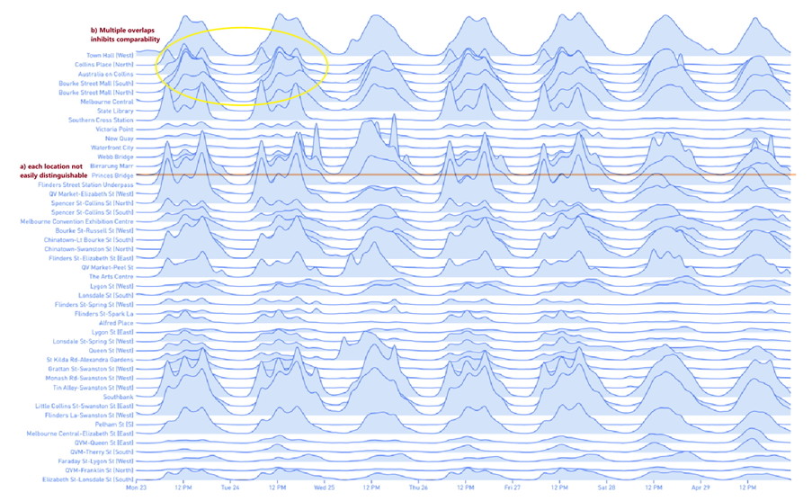

Example 1: Visualization of Environmental Data

Source: CSIRO Website
Background (What)
This visualisation is done by Commonwealth Scientific and Industrial Research Organisation (CSIRO), an Australian Government agency responsible for scientific research, using data from the New South Wales Office of Environment and Heritage.
Aim (Why)
CSIRO's overarching goal was to make sense of large volumes of data, Summarize the available dataset by themes (colour) and quantity (size) at a glance.
The existing diagram is thus an example of exploratory analysis, where information is consumed. No outliers/clusters are identified.
Critique on idiom (How)
Areas for improvement:
- Colour: not clear what theme each colour represents
- Colour variation: not clear what colour intensity represents as they can be of the same size.
- Magnitude: Radial differences between data categories are less distinguishable
- Chartjunk: words that do not lend an understanding. Eg. “Soil” appears multiple times but readers are not privy to what exactly the viz is referring to. Words that are cut-off are not conclusive to the reader.
Suggestions:
- Grouping: Group those of the same topic in the same area / plot each category on its own
- Include a legend for the colour scheme
- Magnitude: Represent the data using rectangles instead of circles for greater comparability. This could be in the form a simple bar chart or nested treemapping. Labels could also be included to indicate the size. This could provide greater space for all the words to be displayed
- Salience: Provide a popout effect for the top few results to draw readers' attention. This enhances the current effect
Example 2: Visualization of pedestrian activity across location and time in Melbourne

Source: Morphocode
Background (What)
This visualization is a static image and is part of a collection of other visualisations to visualize pedestrian activity in multiple locations across different temporal primitives. The temporal primitive concepts illustrated by this study are 1) time point 2) time interval and 3) time span. Time runs from left to right, and each row represents a single location.
Aim (Why)
To compare how pedestrian volume changes across multiple locations throughout an entire week
Critique on idiom (How)
Strengths of the visualisation:
This visualisation provides readers with a birds’ eye view of the traffic across different areas and across all 7 days a week.
- One colour is used throughout the visualization, which looks clean and without clutter
- The shaded areas give a visual cue to the reader regarding the pedestrian volume from the baseline of each location
Areas of improvement:
Since the aim of the viz is for comparability, the areas of improvement largely lie in how to locate make data more comparable across location and time
- Position/order of each location does not follow an intuitive order, hence users will have to scan through the entire list to locate the location of interest
- No Y Axis: unable to tell the actual magnitude. As we learnt from Weber-Fechner’s Law, the scale matters as the human eye will be more sensitive to changes of a smaller baseline weight/stimuli than a bigger baseline. This can lead to poor estimates of the actual magnitude.
- Comparability/Discriminability is challenged: a) Difficult to distinguish/separate each location from the other and b) some instances of overlap hide other data completely and c) difficult to compare across the days

Suggestions:
- Interactivity: As this dataset is more complex, interactivity can help users better process the information in the visualisation as they can go up and down the ladder of abstraction easily. Some suggestions include:
- Enabling users to hover above a point on the line to see the corresponding number value. This helps users to have a better grasp of the relative magnitude (basic comparability) and absolute magnitude (so we do not fall prey to Weber-Fechner’s law)
- Enabling sort/filter options based on location/time. Eg. sort by chronological order or by magnitude on a particular day
- Insert a guiding line for each day: Segmenting the days will help users to better distinguish between the different days in a week (cyclic time data)
- Append a supplementary geospatial map to visualize the above data based on location. This can help users to understand the traffic flow from one area to another across time to understand how crowds are dispersed